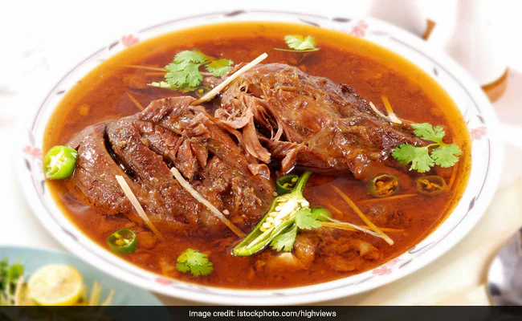

Home
Nihari Recipe
Ingredients:
- 1 lb beef or lamb, cut into chunks
- 2 tbsp ghee or oil
- 1 cup yogurt
- 2 tbsp nihari masala
- 1/2 cup onions, sliced
- 2 tbsp ginger-garlic paste
Instructions:
-
In a large pot, heat ghee or oil and add sliced onions. Cook until
golden brown.
- Add the meat and cook until it's well-cooked.
- Add ginger-garlic paste and nihari masala. Mix well.
- Add yogurt and cook for another 10 minutes on low heat.
